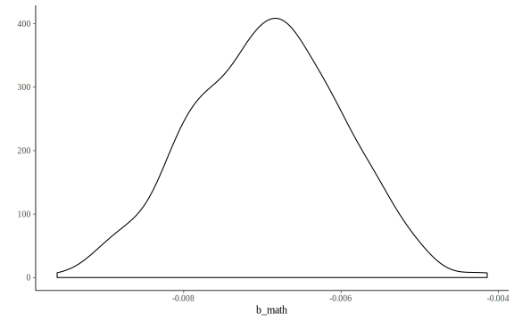
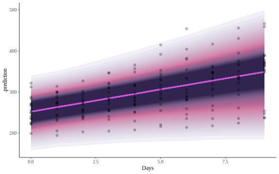

Extracting results
It is easy to get access to the output
Example: grab draws from the posterior for math
b_math
1 -0.005945358
2 -0.006030774
3 -0.009060251
4 -0.007864525
5 -0.006196730
6 -0.006510296
Tidy methods for data extraction

The broom package can make your model results easier to work with5
term estimate std.error lower upper
1 b_Intercept 1.486260e+00 0.0807602243 1.353464e+00 1.613702e+00
2 b_math -6.947692e-03 0.0009433085 -8.589656e-03 -5.444662e-03
3 b_genderMale -2.450094e-01 0.0444296384 -3.257716e-01 -1.680750e-01
4 b_progGeneral 1.273018e+00 0.0809187810 1.148042e+00 1.398220e+00
5 b_progAcademic 8.458137e-01 0.0716282175 7.205499e-01 9.549422e-01
6 lp__ -1.320972e+03 1.6287393824 -1.324051e+03 -1.319034e+03library(kableExtra)
tidy(attendance_brms) %>%
filter(grepl(term, pattern = '^b')) %>%
mutate(term = c('Intercept', 'Math', 'Male', 'General', 'Academic')) %>%
rename_all(str_to_title) %>%
kable(digits = 2)| Term | Estimate | Std.error | Lower | Upper |
|---|---|---|---|---|
| Intercept | 1.49 | 0.08 | 1.35 | 1.61 |
| Math | -0.01 | 0.00 | -0.01 | -0.01 |
| Male | -0.25 | 0.04 | -0.33 | -0.17 |
| General | 1.27 | 0.08 | 1.15 | 1.40 |
| Academic | 0.85 | 0.07 | 0.72 | 0.95 |
tidybayes
Bayesian analysis + tidy data + geoms
# add fitted values given the posterior draws for model parameters
library(tidybayes)
attendance %>%
add_fitted_draws(attendance_brms)# A tibble: 125,600 x 10
# Groups: id, gender, math, daysabs, prog, .row [314]
id gender math daysabs prog .row .chain .iteration .draw .value
<fct> <fct> <dbl> <dbl> <fct> <int> <int> <int> <int> <dbl>
1 1001 Male 63 4 Academic 1 NA NA 1 5.05
2 1001 Male 63 4 Academic 1 NA NA 2 5.52
3 1001 Male 63 4 Academic 1 NA NA 3 4.83
4 1001 Male 63 4 Academic 1 NA NA 4 4.97
5 1001 Male 63 4 Academic 1 NA NA 5 5.41
6 1001 Male 63 4 Academic 1 NA NA 6 4.98
7 1001 Male 63 4 Academic 1 NA NA 7 5.37
8 1001 Male 63 4 Academic 1 NA NA 8 5.30
9 1001 Male 63 4 Academic 1 NA NA 9 4.99
10 1001 Male 63 4 Academic 1 NA NA 10 5.20
# ... with 125,590 more rowssleepstudy %>%
modelr::data_grid(Days = Days,
Subject = levels(Subject)) %>%
add_predicted_draws(sleepstudy_brms) %>%
ggplot(aes(x = Days)) +
stat_lineribbon(aes(y = .prediction),
color = NineteenEightyR::electronic_night()[1],
.width = seq(.5, .99, by = .01),
alpha = .5,
show.legend = F) +
geom_point(aes(y = Reaction), data = sleepstudy, alpha=.25) +
scico::scale_fill_scico_d(alpha=.1, palette = 'acton', direction = -1)
Questions about tidybayes may be shouted across the street 😀
- Developed by Matthew Kay Assistant Professor at UMSI
The posterior predictive distribution is the distribution of the outcome variable implied by a model after using the observed data y (a vector of outcome values), and typically predictors X, to update our beliefs about the unknown parameters θ in the model. For each draw of the parameters θ from the posterior distribution p(θ | y, X) we generate an entire vector of outcomes.↩